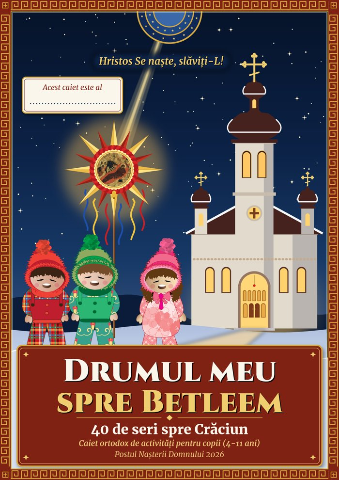

Drumul meu spre Betleem
40 de seri spre Crăciun. Caiet ortodox de activități pentru copii de 4-11 ani, pentru Postul Nașterii Domnului (15 noiembrie - 24 decembrie 2026).
40 evenings to Christmas. An Orthodox activity book for children aged 4-11, for the Nativity Fast (15 November - 24 December 2026).
40 noches hacia la Navidad. Cuaderno ortodoxo de actividades para niños de 4 a 11 años, para el Ayuno de la Natividad (15 de noviembre - 24 de diciembre de 2026).
În fiecare seară, cinci minute cu părinții: un gând pe înțelesul copiilor, trimiterea la Sfânta Scriptură cu o repovestire scurtă, sfântul zilei, o faptă bună, o întrebare și o stea de colorat. Fiecare zi vă trimite la Biblia de acasă, ca să citiți împreună.
Every evening, five minutes with the parents: a thought children can understand, a Scripture reference with a short retelling, the saint of the day, a good deed, a question and a star to colour. Each day sends you to the Bible you have at home, so that you read it together.
Cada noche, cinco minutos con los padres: un pensamiento al alcance de los niños, la referencia a la Sagrada Escritura con un breve relato, el santo del día, una buena obra, una pregunta y una estrella para colorear. Cada día les remite a la Biblia de casa, para que la lean juntos.
Please note: the files on this page are the Romanian edition. The same book in English, «My Road to Bethlehem», is free too: download the English edition. Other languages are listed below.
Atención: los archivos de esta página son la edición en rumano. El mismo cuaderno en español, «Mi camino a Belén», también es gratuito: descargar la edición en español. Más abajo están los demás idiomas.
Alte variante: de tipărit acasă, broșură, LetterOther versions: print at home, booklet, LetterOtras versiones: imprimir en casa, folleto, Carta
Răsfoiți caietulLook inside the bookHojee el cuaderno
Alegeți o pagină din stânga; apăsați pe pagina mare ca s-o vedeți pe tot ecranul.Pick a page on the left; tap the large page to see it full screen (Romanian edition).Elija una página a la izquierda; pulse la página grande para verla a pantalla completa (edición en rumano).
În alte limbi, pentru copiii care cresc în diasporaIn other languages, for children growing up abroadEn otros idiomas, para los niños que crecen fuera de Rumanía
Același caiet, cu textul în limba țării în care cresc copiii; colindele rămân în română, cu traducere. Toate se descarcă gratuit.
The same book, with the text in the language of the country where your children are growing up; the carols stay in Romanian, with a translation. All of them are free to download.
El mismo cuaderno, con el texto en el idioma del país donde crecen los niños; los villancicos quedan en rumano, con traducción. Todos se descargan gratis.
Pentru ecran (A5, interactiv):For screen (A5, interactive):Para pantalla (A5, interactivo):
- English: My Road to Bethlehem
- Español: Mi camino a Belén
- Italiano: Il mio cammino verso Betlemme
- Français: Mon chemin vers Bethléem
- Deutsch: Mein Weg nach Betlehem
De tipărit acasă (A4, 2 pagini pe foaie):To print at home (A4, 2 pages per sheet):Para imprimir en casa (A4, 2 páginas por hoja):
- English: My Road to Bethlehem
- Español: Mi camino a Belén
- Italiano: Il mio cammino verso Betlemme
- Français: Mon chemin vers Bethléem
- Deutsch: Mein Weg nach Betlehem
40 de seri spre Peștera Betleemului40 evenings toward the Cave of Bethlehem40 noches hacia la Cueva de Belén
Vă mai amintiți serile de dinaintea Crăciunului, acasă? Mirosul de cozonac, colindătorii la poartă, steaua purtată din casă în casă și bunica spunând povestea Nașterii Domnului. Pentru mulți dintre noi, aceste amintiri au rămas departe, în satul sau în orașul de unde am plecat.
Copiii noștri cresc acum, de multe ori, în altă țară, cu altă limbă și cu alte obiceiuri. Credința nu a rămas însă în satul de acasă: am primit-o de la părinți, o trăim și o dăruim mai departe. Ea ne apropie de Dumnezeu și ne ține aproape unii de alții, oriunde ne-ar fi casa.
De aceea am ales să ne strângem în jurul copiilor noștri și să le spunem, seară de seară, povestea iubirii lui Dumnezeu, Care ni L-a dăruit pe Însuși Fiul Său, venit la noi ca Prunc.
Do you still remember the evenings before Christmas, back home? The smell of cozonac, the carollers at the gate, the star carried from house to house and grandmother telling the story of the Nativity of the Lord. For many of us, these memories have stayed far away, in the village or the town we left.
Our children now often grow up in another country, with another language and other customs. Yet our faith did not stay behind in the village back home: we received it from our parents, we live it and we pass it on. It draws us closer to God and keeps us close to one another, wherever our home may be.
That is why we have chosen to gather around our children and tell them, evening after evening, the story of the love of God, Who gave us His own Son, Who came to us as a Child.
¿Recuerda todavía las noches antes de la Navidad, en casa? El olor del cozonac, los cantores de villancicos a la puerta, la estrella llevada de casa en casa y la abuela contando la historia del Nacimiento del Señor. Para muchos de nosotros, estos recuerdos se han quedado lejos, en el pueblo o en la ciudad de donde partimos.
Hoy nuestros hijos crecen muchas veces en otro país, con otro idioma y otras costumbres. Pero la fe no se quedó en el pueblo de casa: la recibimos de nuestros padres, la vivimos y la transmitimos. Ella nos acerca a Dios y nos mantiene cerca unos de otros, dondequiera que esté nuestro hogar.
Por eso hemos elegido reunirnos en torno a nuestros hijos y contarles, noche tras noche, la historia del amor de Dios, que nos dio a Su propio Hijo, venido a nosotros como Niño.
Pe cine ajutăWho it helpsA quién ayuda
- Familiile, acasă sau în diaspora: un obicei de seară simplu, care leagă copilul de Biserică și de tradițiile de acasă.
- Preoții și cateheții: îl puteți tipări pentru toți copiii parohiei sau ai grupei, gratuit. Vă rugăm doar să nu-l vindeți și să nu-l publicați ca al dumneavoastră.
- Bunicii care vor să petreacă postul cu nepoții, chiar și de departe.
- Families, in Romania or abroad: a simple evening habit that ties the child to the Church and to the traditions of home.
- Priests and catechists: you may print it free of charge for all the children of your parish or group. We only ask you not to sell it and not to publish it as your own.
- Grandparents who want to spend the Fast with their grandchildren, even from far away.
- Las familias, en Rumanía o en el extranjero: una costumbre sencilla para la noche, que une al niño con la Iglesia y con las tradiciones de casa.
- Los sacerdotes y catequistas: pueden imprimirlo gratis para todos los niños de la parroquia o del grupo. Solo les pedimos que no lo vendan ni lo publiquen como propio.
- Los abuelos que quieren pasar el Ayuno con sus nietos, aunque sea desde lejos.
Despre caietAbout the bookSobre el cuaderno
Trimiterile la Sfânta Scriptură sunt exacte; repovestirile pentru copii sunt scrise de noi și urmează sensul Bibliei ortodoxe. Invocațiile scurte sunt cele din Ceaslov, iar colindele sunt colinde populare tradiționale. Icoana Nașterii Domnului (sec. al XV-lea, atribuită lui Andrei Rubliov) este în domeniul public. Nu folosim chipuri de sfinți desenate sau generate de calculator.
The references to Holy Scripture are exact; the retellings for children are our own and follow the meaning of the Orthodox Bible. The short invocations are those of the Horologion (Book of Hours), and the carols are traditional folk carols. The icon of the Nativity of the Lord (15th century, attributed to Andrei Rublev) is in the public domain. We never use drawn or computer-generated faces of saints.
Las referencias a la Sagrada Escritura son exactas; los relatos para niños los hemos escrito nosotros y siguen el sentido de la Biblia ortodoxa. Las invocaciones breves son las del Horologion (Libro de las Horas), y los villancicos son villancicos populares tradicionales. El icono de la Natividad del Señor (siglo XV, atribuido a Andréi Rubliov) es de dominio público. No usamos rostros de santos dibujados ni generados por ordenador.
Ați găsit o greșeală sau aveți o propunere? Spuneți-ne părerea; ne ajută să îl facem mai bun.
Have you found a mistake or do you have a suggestion? Tell us what you think; it helps us make it better.
¿Ha encontrado un error o tiene una propuesta? Díganos su opinión; nos ayuda a mejorarlo.
Pentru serile Postului, în familie: jocurile de masă, calendarul pentru cei mari și cartea pentru bunici, la Candela Parohiei. Vreți să aflați când apare un material nou? Abonați-vă la noutăți.For family evenings in the Fast: board games and printables from Candela Parohiei (Romanian). Want to know when something new comes out? Subscribe to our news.Para las tardes del Ayuno en familia: juegos de mesa y materiales para imprimir de Candela Parohiei. ¿Quiere saber cuándo sale algo nuevo? Suscríbase a las novedades.